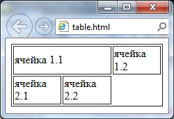

Создаем таблицу на html-странице
Рубрика: Основы HTML
4 ноября 2013
Здравствуйте, уважаемые читатели блога! Частенько на web-страницы, кроме текста и картинок, возникает необходимость вывести различные данные в виде таблиц. Да это и понятно, таблица — удобнейший способ представления большого количества сведений. Поэтому возникает вопрос «Как же вставлять таблицы в html?». В этой статье я отвечу вам на этот вопрос и приведу вам множество примеров различных html таблиц.
Как создать таблицу используя HTML
HTML-таблицы создаются в четыре шага.
1. На первом шаге в html-коде с помощью парного тега <table> указываем браузеру, что в web-страницу вставлена таблица: <table></table>. Элемент table является блочным элементом web-страницы. Следовательно таблица всегда выводится с новой строки с отступами по вертикали от соседних элементов, поэтому нет необходимости помещать ее в абзац.
2. На втором шаге формируем строки таблицы, помещая парные теги <tr> внутрь <table>. Каждый элемент <tr> создает отдельную строку:
<table>
<tr></tr>
<tr></tr>
<tr></tr>
</table>
3. Далее, на третьем шаге формируем ячейки таблицы с помощью парных тегов <td> и <th>, которые помещаются внутрь элемента <tr>. Тег <td> создает обычную ячейку, а <th> ячейку заголовка, т.е. шапку соответствующего столбца:
<table>
<tr>
<th></th><th></th><th></th>
</tr>
<tr>
<td></td><td></td><td></td>
</tr>
<tr>
<td></td><td></td><td></td>
</tr>
</table>
4. Ну и на последнем шаге помещаем внутрь элементов <th> и <tr> содержимое ячеек. HTML-код вставки таблицы на веб-страницу выглядит примерно так:
<table border="1">
<tr>
<th>Столбец 1</th><th>Столбец 2</th><th>Столбец 3</th>
</tr>
<tr>
<td>Ячейка 1-1</td><td>Ячейка 1-2</td><td>Ячейка 1-3</td>
</tr>
<tr>
<td>Ячейка 2-1</td><td>Ячейка 2-2</td><td>Ячейка 2-3</td>
</tr>
</table>
В открывающий тег table я добавил атрибут border и присвоил ему значение 1 для того, чтобы на странице в браузере были видны границы ячеек. По умолчанию этот атрибут равен 0. Результат:
|
Столбец 1 |
Столбец 2 |
Столбец 3 |
|
Ячейка 1-1 |
Ячейка 1-2 |
Ячейка 1-3 |
|
Ячейка 2-1 |
Ячейка 2-2 |
Ячейка 2-3 |
Более тонко настроить отображение границ помогут каскадные таблицы стилей. С помощью свойства CSS border можно изменить толщину и цвет рамок, а также изменить тип границ.
Текст, который необходимо поместить внутрь ячеек, заключать в блочные теги необязательно, но, если текст большой, его можно разбить на абзацы, применив тег <p>. Если понадобиться как-то оформить вставляемый текст, то можно использовать теги оформления.
Кроме текста мы можем помещать в ячейки картинки с помощью тега <img>:
<td><img src="image.jpg" alt="картинка в ячейке"></td>
В качестве содержимого ячейки может даже выступать другая таблица. В этом случае создание вложенной таблицы ничем не отличается от создания обычной таблицы. Просто между тегами <td> и </td> вставляются теги <table> и </table>, и в нее вставляются строки и ячейки.
При создании таблиц необходимо учитывать некоторые правила:
Заголовок таблицы
Далее рассмотрим дополнительные секции таблиц html. На практике они используются редко, но иногда могут пригодиться.
Начнем с парного тега <caption>, который задает таблице заголовок. Текст заголовка помещается внутрь этого тега, а тот должен находится внутри тега <table>. Причем без разницы в каком месте html-кода таблицы поместить тег <caption>, браузер все равно отобразит заголовок над таблицей и выровняет по ее центру. Но обычно тег <caption> помещают сразу после открывающего тега <table>:
<table>
<caption>Это таблица</caption>
<tr>
<td>Ячейка 1.1</td><td>Ячейка 1.2</td>
</tr>
<tr>
<td>Ячейка 2.1</td><td>Ячейка 2.2</td>
</tr>
</table>
Отображение:
Это таблица
|
Ячейка 1.1 |
Ячейка 1.2 |
|
Ячейка 2.1 |
Ячейка 2.2 |
Секции таблицы
Таблицу html можно логически разбить на части — секции. Всего существует три вида секций:
Секция заголовка таблицы формируется с помощью парного тега <thead>. Причем допустимо использовать не более одного элемента <thead> в пределах одной таблицы, и он должен идти в html коде сразу после тега <table>.
Секцию тела создают парным тегом <tbody>. Одна html таблица может содержать несколько секций тела, что позволяет создавать структурные блоки к которым могут применяться единые стили оформления.
Секция завершения формируется парным тегом <tfoot> и в пределах одного контейнера <table> может быть только одна.
Все эти парные теги должны содержать теги <tr>, которые формируют строки, относящиеся к соответствующим секциям:
<table>
<thead>
<tr>
<td>Столбец 1</td><td>Столбец 2</td><td>Столбец 3</td>
</tr>
</thead>
<tbody>
<tr>
<td>Ячейка 1.1</td><td>Ячейка 1.2</td><td>Ячейка 1.3</td>
</tr>
<tr>
<td>Ячейка 2.1</td><td>Ячейка 2.2</td><td>Ячейка 2.3</td>
</tr>
</tbody>
<tfoot>
<tr>
<td>Итог 1</td><td>Итог 2</td><td>Итог 3</td>
</tr>
</tfoot>
</table>
Объединение ячеек таблицы
Осталось рассказать о самой важной возможности таблиц — объединении ячеек. Для объединения нескольких ячеек в одну используются атрибуты colspan и rowspan тегов <td> и <th>. Атрибут colspan задает количество ячеек объединенных по горизонтали, а rowspan — по вертикали:
<table border="1">
<tr>
<td>1.1</td><td colspan="2">1.2-1.3</td>
</tr>
<tr>
<td>2.1</td><td>2.2</td><td>2.3</td>
</tr>
<tr>
<td rowspan="2">3.1-4.1</td><td>3.2</td><td>3.3</td>
</tr>
<tr>
<td>4.2</td><td>4.3</td></tr>
</table>
Результат примера:
|
1.1 |
1.2-1.3 | |
|
2.1 |
2.2 |
2.3 |
|
3.1-4.1 |
3.2 |
3.3 |
|
4.2 |
4.3 | |
При объединении ячеек важно проверить количество ячеек в каждой строке, чтобы не было ошибок. Так, конструкция <td colspan="2"> заменяет две ячейки, поэтому в следующей строке должно быть два тега <td>, либо такая же конструкция! Если число ячеек во всех строках не будет совпадать, то появятся пустые лишние ячейки.
Пример неправильного html-кода при объединении ячеек:
<table border="1">
<tr>
<td colspan="2">ячейка 1.1</td><td>ячейка 1.2</td>
</tr>
<tr>
<td>ячейка 2.1</td><td>ячейка 2.2</td>
</tr>
</table>
И результат отображения в браузере:

Т.е. если проанализировать html-код, то вы заметите, что в первой строке задано три ячейки, две из которых объединены с помощью атрибута colspan, а во второй строке добавлено только две ячейки. По этому во второй строке возникает третья пустая ячейка.
Атрибуты тега <table>
В этом посте мы уже столкнулись с одним атрибутом тега <table>. С атрибутом border, который задает толщину рамки в пикселях. По умолчанию он равен 0 и следовательно ячейки по умолчанию отображаются без рамки.
Кроме атрибута border есть еще несколько важных атрибутов поддерживаемых тегом <table>. Давайте их рассмотрим.
Атрибут align — задает выравнивание таблицы на странице. Может принимать значения left, center, right, которые задают выравнивание соответственно по левому краю, по центру и по правому краю. По умолчанию равен left.
Атрибут background, который задает фоновый рисунок к таблице. В качестве значения принимает адрес файла с изображением.
bgcolor — устанавливает цвет фона таблицы. Можно использовать совместно с атрибутом background.
Атрибут bordercolor задает цвет рамки таблицы.
Cellpadding — определяет расстояние между границей ячейки и ее содержимым. Позволяет улучшить читабельность таблицы. В качестве значения может быть любое положительное число.
Cellspacing — задает расстояние между внешними границами ячеек.
На этом рассказывать о том как вставить таблицу в html страницу я закончу, только подведу итоги:
На этом все, в следующем посте я расскажу о средствах навигации на html-сайте. Чтобы не пропустить этот пост подписывайтесь на обновления моего блога! Все, до новых встреч!
(2 оценок, среднее: 5,00 из 5)
Получай статьи почтой: